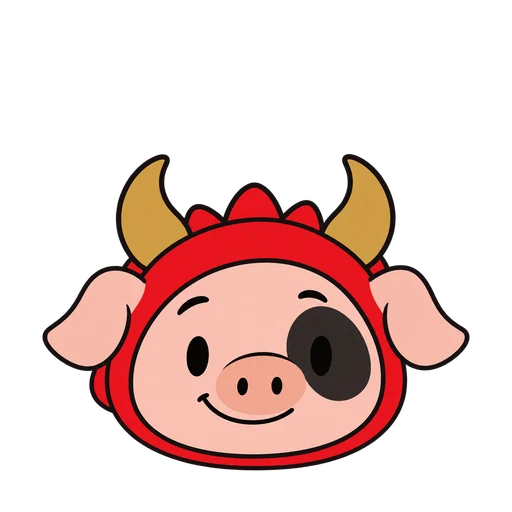

01 / Carga y bienvenida
Bienvenida
saludando1254 × 1254 · alpha real · gesto único
Un compañero para tu campus
Gastón, el cerdito con traje de dragón. Curioso, cercano y listo para acompañarte a tu siguiente destino.
Una identidad consistente
Hocico y orejas rosadas, traje rojo, cuernos ocre y parche en su ojo izquierdo. Las poses conservan esta asimetría: nunca se reflejan para cambiar de dirección.

48pxMiCampus USFQ / recursos de interfaz
Los gestos se ejecutan una vez. Usa “Repetir” para revisarlos. El control de movimiento reducido simula también la preferencia del sistema.
01 / Carga y bienvenida
saludando1254 × 1254 · alpha real · gesto único
03 / Borde del buscador
asomado1254 × 1254 · alpha real · gesto único
04 / Indicación decorativa hacia la derecha
guiando1254 × 1254 · alpha real · gesto único
05 / Indicación decorativa hacia la izquierda
guiando-izquierda1254 × 1254 · alpha real · gesto único
06 / Llegada al destino
logrado1254 × 1254 · alpha real · gesto único
07 / Sin resultados
buscando1254 × 1254 · alpha real · gesto único
08 / Consulta de ubicación
ubicacion1254 × 1254 · alpha real · gesto único
09 / Error recuperable o conexión
sin-conexion1254 × 1254 · alpha real · gesto único
11 / Entrada al recorrido a pie
explorando1254 × 1254 · alpha real · gesto único
12 / Respuesta a una caricia
carino1254 × 1254 · alpha real · gesto único
13 / Ayuda y consejos
ayuda1254 × 1254 · alpha real · gesto único
14 / Recurso opcional de destino
pin1254 × 1254 · alpha real · gesto único
Entrega lista para integrar
La app puede cargar solo el WebP estático que necesita y aplicar un gesto CSS al cambiar de estado. Los PNG de alta resolución y los WebP animados quedan disponibles para otros usos.
Creado con la herramienta integrada image_gen; exportaciones y gestos de interfaz producidos por código. No es un rig de extremidades ni un ciclo de caminata.